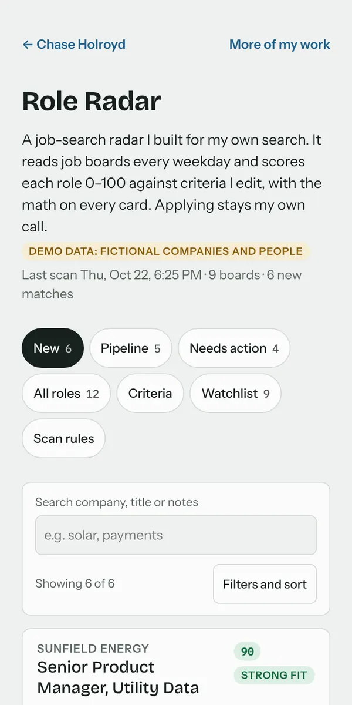

AI tool · beta
Role Radar
Most of a job search is triage. Role Radar reads the boards when I run a scan and explains which roles merit my time, so I can say no faster and focus on the few that fit.

The problem
Most of a job search is triage: dozens of boards, repeat postings, and a pull to apply to everything. The scarce thing is my attention, so the tool's job is to say no faster.
What I built
- A scan on request across company boards (Greenhouse, Ashby, Lever), ZipRecruiter, Himalayas, Climatebase and job-alert emails, with duplicates merged.
- A 0-100 fit score for every role with a one-line reason.
- One tracker that updates itself when an application is confirmed or closed.
How it works
Each role is scored against criteria I edit in one plain file: title, remote, pay, sectors and culture signals. The score always shows its reasons, so a wrong call is a one-line fix to the criteria, not a mystery. The agent finds and ranks; reading the posting and applying stay with me.
Product calls
- Explainable over clever. Every score shows its reasons, and the criteria are plain text.
- Precision, not volume. The goal is fewer, better applications, measured by how many top-scored roles become real conversations.
- One tracker, not three. Status lived in three places and drifted, so I retired the old pipeline.
- Cost-aware. Big boards run three days a week, and a scan stops paging when results stop being new.
Proof
- Tested30+ test files in the public repo.
- Demo on sample dataMade-up jobs and companies; screenshots are labeled demo data.
- OpenCode on GitHub, with a README case study.
Try it
The demo runs the real app in your browser on made-up jobs. Try anything: it resets when you reload.
Status and what's next
The radar runs for me every weekday. The public demo shows the radar only; I am confirming the board count against the repo and tightening the demo's sample data before calling it done. A single-page app on Claude with its own saved database, plus connectors for ZipRecruiter and email.